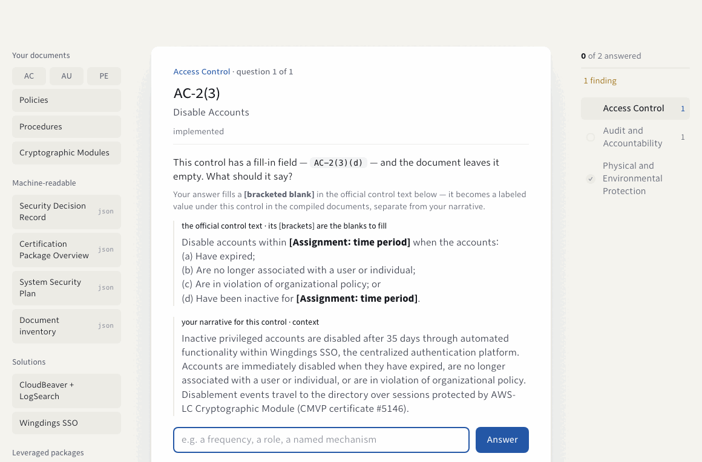
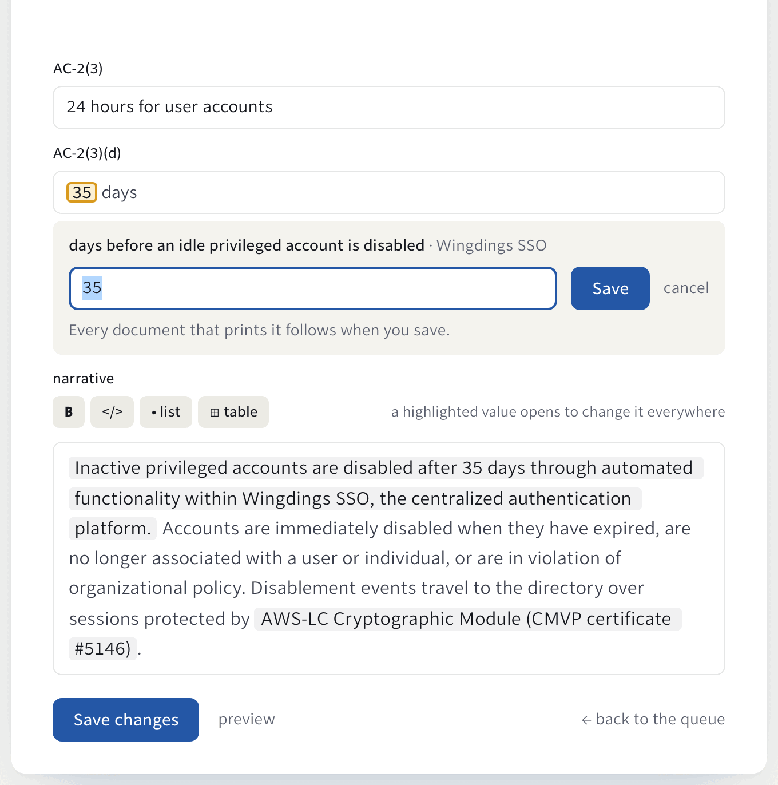
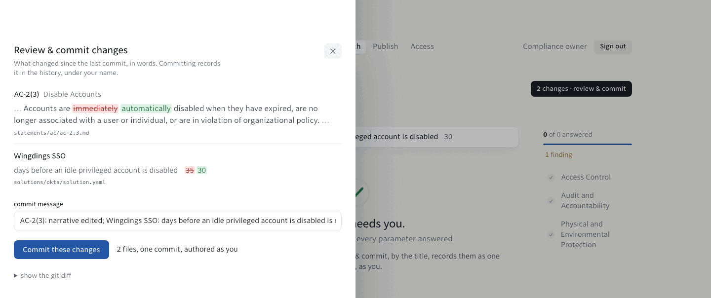
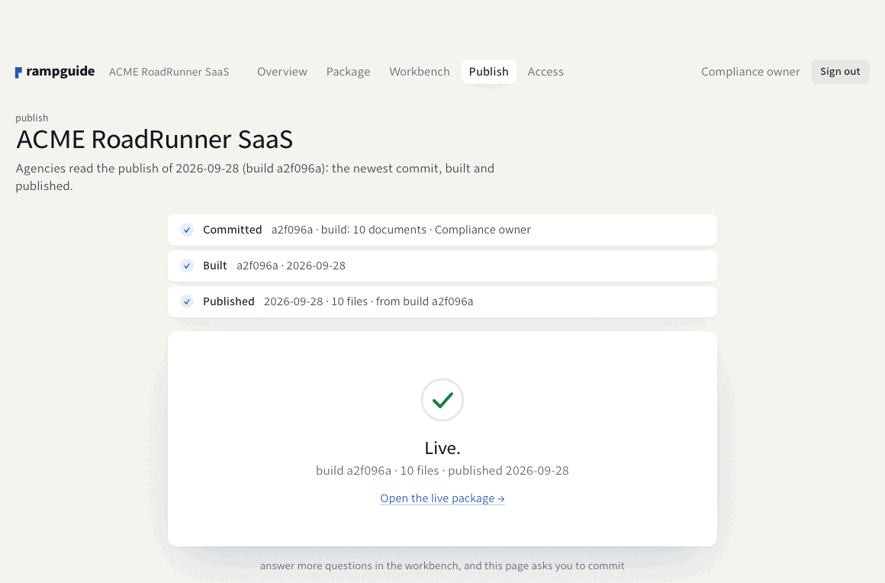
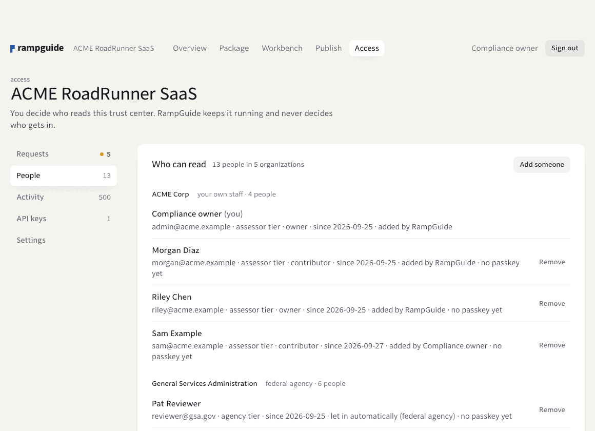
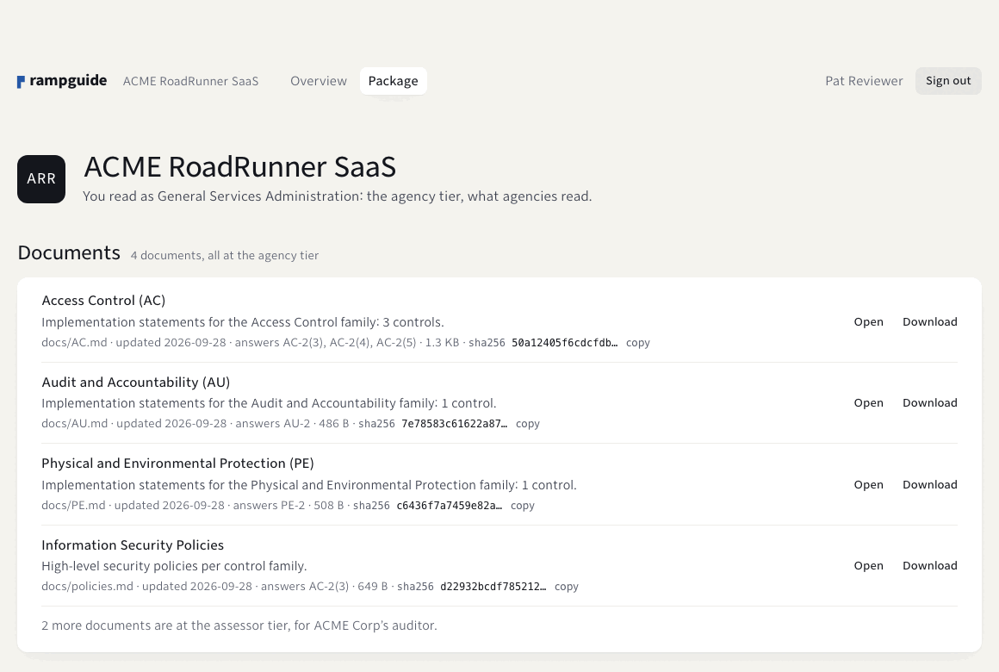

The product, up close.
One hosted app at trust.rampguide.com. Your people answer what the package still needs, review and commit as themselves, and publish; the agencies, assessors and customers you let in read the result in your trust center. Shown on a fictional program, ACME's RoadRunner.

It asks only what the package still needs.
Your people sign in with a passkey and open the workbench. It shows one question at a time: a control whose official text has a blank nobody has filled, or a placeholder left over from setup. The official wording is right there with its brackets marked, and your own narrative sits underneath for context.
- Every answer lands in a file in your package's repository. The card names which one.
- The documents an answer feeds light up in the list on the left, so you see what the next build will change.
- "Doesn't apply?" marks the control not applicable and asks for the justification the program requires instead.

A value is set once and printed everywhere.
Open any control from inside its document to edit it. Values show as highlighted chips. Open one and you change it where it lives, and every document that prints it follows when you save.
- Each value says what it is and whose it is: "days before an idle privileged account is disabled", from the single sign-on solution.
- Status, who implements the control, and the narrative are edited on the same card.

Read the change in words, then commit it as yourself.
The button in the corner counts what you changed. Open it and the change reads as plain sentences: removed words struck through, new words marked. One button records it as a single commit under your own name and verified address.
- Every change keeps who made it, when and why. Compliance changes get the same paper trail as code.
- The git diff is one click away for anyone who wants it.
- A commit is not a publish. Readers keep the published package until an owner publishes again.

Build and publish from one page.
The Publish page walks three steps in order: committed, built, published. The build runs on the committed files, and what readers get is exactly the bytes it wrote. Contributors answer, commit and build; only an owner publishes.
- Readers never see work in progress. They keep the last publish until the next one.
- One snapshot per Ongoing Certification Report freezes what was published, kept for the life of the certification.

You decide who reads, and see every read.
An owner runs the trust center from Access: requests to let in or turn down, the people who hold access and at which tier, the activity log, API keys for programs, and the settings. RampGuide keeps it running and never decides who gets in.
- Federal agency staff can be let in automatically: a .gov or .mil address on the federal list kept by CISA, the Cybersecurity and Infrastructure Security Agency. Everyone else waits for you.
- Turn an agency down and the page gives you FedRAMP's report text and the five-business-day deadline, and keeps both in view until you record FedRAMP's ticket number.
- Tiers decide what each reader opens: the agency tier, or the assessor tier, which adds the procedures and the cryptographic-module table.

What an agency reads, hash for hash.
An agency reviewer signs in with a passkey and reads the package at their tier in your trust center: the documents and the machine-readable files FedRAMP's 2026 rules ask for, each with its size and SHA-256 hash. Every open and every download is logged.
- Programs read the same package through a documented API.
- The public page and its JSON carry what the FedRAMP Marketplace asks for, with no sign-in.
One fact, every document it feeds.
This is the whole idea in one picture. Flip the highlighted fact and watch the change travel through the pipeline. Switch tracks to see the same facts produce the package for FedRAMP's other track.
Want to see it on your own program?
Complete-tier onboarding starts with your existing documents.